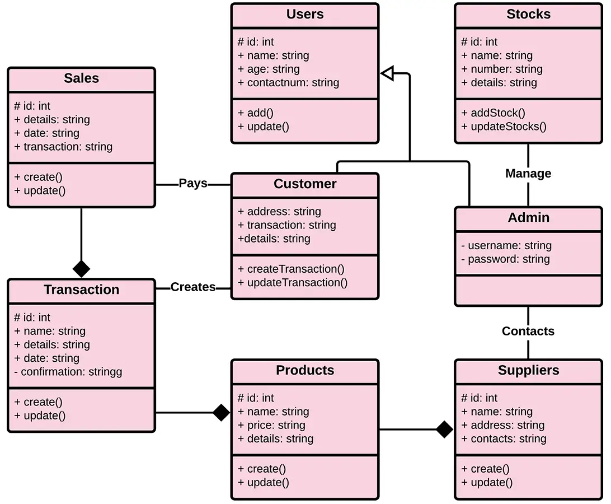

Projects
Warehouse Management System
As the Scrum Master of our university class project, I played a key role in leading the team of five members, promoting effective communication, and fostering collaboration. In addition to my role as Scrum Master, I also contributed to the project's development by creating a user-friendly GUI with live graphs for the frontend. For the backend, I implemented secure database manipulation to ensure data integrity and protection. Despite challenges that arose during the project, I skillfully kept the team together and maintained open lines of communication with product owners to ensure that project requirements were met successfully.
Sports Data Analysis - Metropolitan Regions and Teams
For the final assignment of an online course I took in data science, I worked with metropolitan regions and sports teams. I used Python, Numpy, and Pandas to clean and preprocess the data, ensuring its quality. Analyzing the 2018 data, I calculated win/loss ratios for NFL, MLB, NBA, and NHL teams, gaining valuable insights into their performance. Statistical techniques like distributions, sampling, and t-tests were applied to analyze the data, enabling meaningful conclusions. Lastly, I communicated my findings concisely and effectively, sharing insightful insights.
UX-focused TodoList Web App
I honed my skills by creating a user-friendly TodoList web application that prioritized delivering an exceptional User Experience (UX). Through strategic design choices, I incorporated intuitive and responsive elements to maximize user engagement and satisfaction. I also seamlessly integrated essential backend functionalities such as task management, user authentication, and data persistence to ensure smooth operation. Actively engaging in user testing and gathering feedback, I continuously improved the application's usability, iterating based on valuable user input.